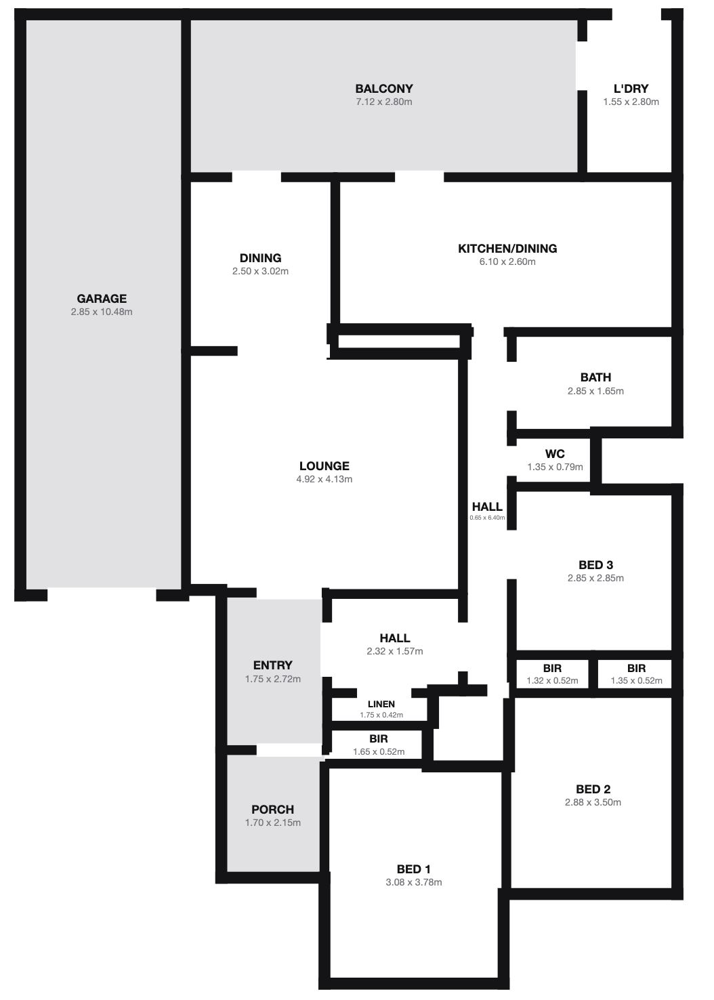
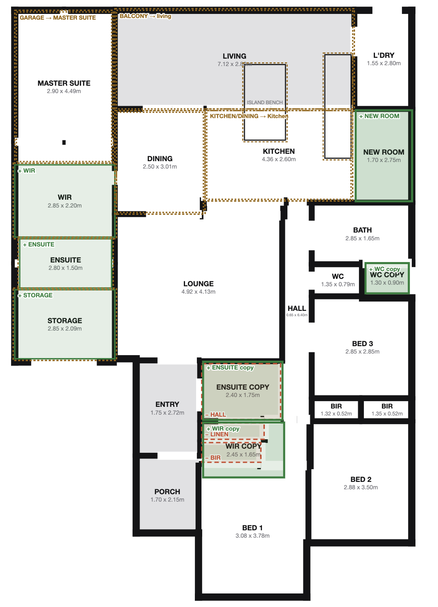

Carport addedNew white flat-roof carport carried over the driveway on slim posts, ahead of the
retained single garage — covered parking without touching the building envelope.
Full render over face brickThe 1960s orange brickwork is rendered and painted crisp white; hip roof retained and
recoated charcoal with matching white fascia and gutters.
Front door opens to livingEntry rebuilt around a timber-look pivot door with a full-height glazed sidelight and
relocated so the door lands directly in the living zone — no dog-leg entry hall.
Window joinery renewedTimber frames replaced with slim white aluminium; same openings, cleaner sight lines.
Driveway & landscapingConcrete strips replaced by large-format tiles with a banded inlay; tiled entry steps
and porch; pebbled garden beds against the render.
Floor-Plan Studio · concept proposalImagery indicative only — not architectural advice. Envelope unchanged.231-PFR · 2026-07-13
231 Peats Ferry Road, Hornsby · floor plan
Plan comparison — original → proposed
PAGE 2 / 2
Original

Proposed

Existing3bd · 1ba · 1wc
Proposed4bd · 3ba · 2wc
Key plan changes
Garage → master suiteThe 10.5m garage strip becomes a master suite 2.90×4.49 with
walk-in robe 2.85×2.20, ensuite 2.80×1.50 and
storage 2.85×2.09 (parking moves to the new carport).
Balcony enclosed → open-plan livingThe covered balcony joins the interior as LIVING 7.12×2.80,
flowing into the kitchen with a new island bench; KITCHEN/DINING trims to KITCHEN
4.36×2.60.
Bed 1 becomes a second suitePrivate ensuite 2.40×1.75 + walk-in robe
2.45×1.65 carved from the rear hall, linen and BIR.
Second WCAdditional WC 1.30×0.90 beside the main bathroom for the
bed 2–3 wing.
New multipurpose roomFlexible room 1.70×2.75 off the laundry — study nook,
mudroom or pantry overflow.
addedremovedmodified— overlays as drawn on the proposed plan
Floor-Plan Studio · concept proposalAll dimensions in metres, approximate. External envelope unchanged; validator-checked geometry.231-PFR · 2026-07-13
Two A4-landscape sheets — print or “Save as PDF” reproduces them exactly. Annotate anything you want changed.